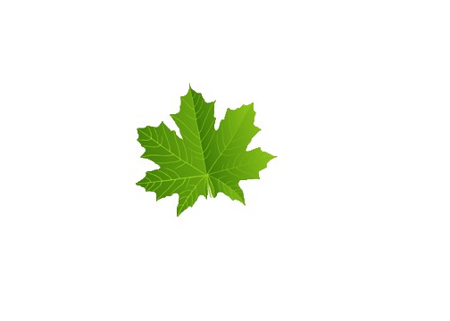
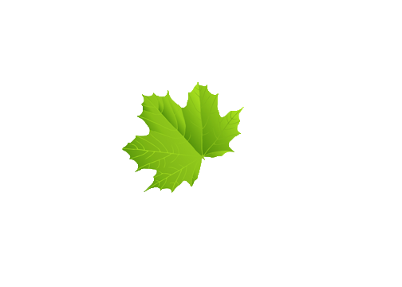

Xin chào, tên tôi là tên đầy đủ của Đào Xuân Vinh. Tôi 20 tuổi và tôi là sinh viên Đại học Công nghiệp Hà Nội, tôi có bạn gái. cô ấy tên là Vân, cô ấy đến từ Thái Bình. Oww xin lỗi tôi quên chưa giới thiệu quê hương của tôi. Tôi đến từ thành phố Bắc Giang, huyện Yên Dũng, xã Nhã Sơn tuy nhiên nhà tôi và nhà bạn gái tôi ở xa nhưng không vấn đề gì. Quay lại vấn đề chính về thông tin của tôi Tôi đang học công nghệ thông tin và là sinh viên năm thứ 2. Tôi vẫn không biết trong tương lai tôi là ai. Bao nhiêu tiền 1 tháng nhưng bây giờ, tôi thực sự yêu thích Chuyên ngành lớn của mình đặc biệt tôi muốn trở thành một nhà phát triển web. Tôi muốn trở thành một font-end developer và tôi đang cố gắng từ bây giờ bằng cách học trực tuyến trên w3school. Năm nay là năm 2020, tôi hy vọng vào năm 2025 tôi sẽ đạt được điều gì đó.xem bản dịch
Thì tôi cũng có dùng 1 số mạng xã hội thôi như kiểu FaceBook, Zalo thế thôi thật ra cũng không thích online lắm. Nghĩ mà thấy buồn cười theo ngành công nghệ mà lại ko thích dụng mạng xã hội. Nhiều người bảo họ thích IT do hồi nhỏ họ suốt ngày ngồi máy tính không học thì chơi game tìm tòi. Tôi có 1 thằng bạn học điện mà nó còn biết nhiều về máy tính hơn tôi ý về mảng phần cứng, nó biết cài win, biết sửa 1 số cái lỗi linh tinh mà máy tính hay bị còn mình thì chả biết gi Link Face book nè: https://www.facebook.com/vinh.dolla?ref=bookmarks Còn đây là của ny tôi: https://www.facebook.com/van.do.9484941 À Zaolo thì thôi nhé có github xem tạm nha: https://github.com/daoxuanvinh992000